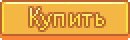

Узелки
- О смешанных узелках, выбранных в начале игры в расширенных настройках смотрите статью Смешанные узелки.
Узелки — это пожертвования, которые игрок оставляет Джунимо через золотые свитки в клубе. Когда узелок завершен, Джунимо дают игроку награду. Когда завершены все узелки в помещении, Джунимо восстанавливают его и дают особую награду, которая может быть полезна не только игроку, но и всем жителям города.
Награда за завершение узелка выдается сразу же, награда за завершение помещения — на следующее утро (событие происходит, когда игрок ложится спать).
В списке требований для нескольких узелков предметов больше, чем пустых слотов для них (например, в Хозяйственном узелке 12 предметов и 6 слотов). Это значит, что вы сами можете выбрать, какие из требуемых предметов жертвовать. Необязательно приносить все предметы, достаточно заполнить все пустые слоты.
Завершение всех узелков восстанавливает городской клуб, а игрок получает достижение «Местная легенда». Если зайти в город Пеликан на следующий день после восстановления клуба, можно увидеть сцену его торжественного открытия, где игрок получит достижение и награду.
Если вместо этого вы купите членство в ДжоджаМарте, клуб превратится в склад Джоджа. Узелки уже будут недоступны, а награды можно получить, если заплатить Моррису и корпорации Джоджа, используя бланк с проектами по общественному развитию Джоджа.

Всего в городском клубе 6 комнат и 30 узелков. На складе Джоджа можно приобрести 5 наград (кроме награды «Дружба»).
Открытые узелки можно просмотреть в любое время, если нажать на золотой свиток в верхнем правом углу основного меню (над урной и кнопкой сортировки).
Ассортимент странствующего торговца
Почти у всех предметов, необходимых для узелков, есть шанс появиться в продаже у странствующего торговца. Исключения указаны ниже. Эти предметы никогда не будет продавать странствующий торговец:
|
|
|
*Нужны только в смешанных узелках
Стандартные Узелки
Комната искусств

Узелки в комнате искусств открываются первыми. В награду за завершение всех узелков в этой комнате Джунимо ремонтируют мост к востоку от шахты, обеспечивая игроку доступ к карьеру.
| Награда в комнате искусств |
Ремонт моста |
|---|
 |
Собирательство весной | ||
| Собирательство весной, стенд Пьера на Цветочных танцах | |||
| Собирательство весной | |||
| Собирательство весной, стенд Пьера на Цветочных танцах | |||
 |
Собирательство летом, фермерство осенью | |||
| Собирательство летом, пещера на ферме (если выбрать летучих мышей) | ||||
| Собирательство летом | ||||
| Собирательство осенью, собирательство весной и осенью в тайном лесу, пещера на ферме (если выбрать грибы), подсочник на грибном дереве | |||
| Собирательство осенью, пещера на ферме (если выбрать летучих мышей) | |||
| Собирательство осенью | |||
| Собирательство осенью, пещера на ферме (если выбрать летучих мышей) | |||
 |
Копание земли или мест для артефактов зимой, синие слаймы на 41-79 уровнях шахты | ||
| Собирательство зимой, пыльные духи на 41-79 уровнях шахты | |||
| Копание земли или мест для артефактов зимой | |||
| Собирательство зимой | |||
 |
Вырубка деревьев или веток топором | ||
| Вырубка деревьев или веток топором | |||
| Разрушение камней киркой | |||
| Вырубка больших пней или больших бревен улучшенным топором, разрушение коробок в шахте | |||
 |
Собирательство в пустыне | ||
| Собирательство в пустыне | |||
| Разрушение коробок или копание почвы в шахте | |||
| Собирательство в шахте, собирательство летом и осенью в тайном лесу, пещера на ферме (если выбрать грибы), подсочник на грибном дереве | |||
| Собирательство в шахте, пещера на ферме (если выбрать грибы), собирательство осенью на лесной ферме | |||
| Подсочник на клене | |||
| Подсочник на дубе | |||
| Подсочник на сосне | |||
| Собирательство весной в тайном лесу, пещера на ферме (если выбрать грибы) | |||
Кладовая


Кладовая открывается после завершения одного любого узелка. В награду за завершение всех узелков в кладовой Джунимо починят для игрока разрушенную теплицу, предоставив возможность выращивать в ней культуры и плодовые деревья круглый год.
| Награда в кладовой |
Теплица |
|---|
 |
Весенняя культура | ||
| Весенняя культура | |||
| Весенняя культура | |||
| Весенняя культура | |||
| Летняя культура | |||
| Летняя культура | |||
| Летняя культура | |||
| Летняя культура | |||
 |
Летняя / осенняя культура | ||
| Осенняя культура | |||
| Осенняя культура | |||
| Осенняя культура | |||
 |
|
Весенняя культура золотого качества | ||||
|
Летняя культура золотого качества | |||||
|
Осенняя культура золотого качества | |||||
|
Летняя / осенняя культура золотого качества | |||||
 |
Коровы | ||
| Курицы | |||
| Курицы | |||
| Козы | |||
| Овцы, кролики | |||
| Утки | |||
 |
Делается из трюфелей в прессе для масла | ||
| Прялка, переработка мокрой газеты в утилизационной машине | |||
| Пресс для сыра | |||
| Пресс для сыра | |||
| Улей | |||
| Кадка | |||
| Яблоня осенью, пещера на ферме (если выбрать летучих мышей) | |||
| Абрикосовое дерево весной, пещера на ферме (если выбрать летучих мышей) | |||
| Апельсиновое дерево летом, пещера на ферме (если выбрать летучих мышей) | |||
| Персиковое дерево летом, пещера на ферме (если выбрать летучих мышей) | |||
| Гранатовое дерево осенью, пещера на ферме (если выбрать летучих мышей) | |||
| Вишневое дерево весной, пещера на ферме (если выбрать летучих мышей) | |||
Аквариум


Аквариум открывается после завершения одного любого узелка. В награду за завершение всех узелков в аквариуме Джунимо уберут блестящий булыжник слева от входа в шахту. После этого Вилли даст вам медный промывочный ковш, с помощью которого вы сможете промывать руду из водоемов.
Примечание: может оказаться, что для завершения Особого узелка вам сначала придется заполнить все узелки в сейфе, так как песковника можно выловить только в пустыне, если не удалось купить его у странствующего торговца.
| Награда в аквариуме |
Устранение блестящего булыжника |
|---|
 |
Ловится в реках с 6:00 до 19:00 весной и летом. | ||
| Выловить можно только в дождливую погоду. Ловится в реках в любое время суток весной и осенью; Можно так же выловить летом в пруду тайного леса. | |||
| Ловится в реках в любое время суток весной, летом и осенью. Только в дождливую погоду. | |||
| Ловится в реках с 6:00 до 19:00 осенью и зимой. | |||
 |
Ловится в озерах с 6:00 до 19:00 в любое время года. | ||
| Ловится в озерах в любое время суток весной, летом и осенью. | |||
| Ловится в озерах в любое время суток и в любое время года. | |||
| Ловится в озерах с 6:00 до 19:00 летом и зимой. | |||
 |
Ловится в океане с 6:00 до 19:00 весной, осенью и зимой. | ||
| Ловится в океане с 6:00 до 19:00 летом и зимой. | |||
| Ловится в океане с 6:00 до 19:00 летом и осенью. Только в дождливую погоду. | |||
| Ловится в океане с 6:00 до 14:00 летом и осенью. | |||
 |
Ловится в реках с 12:00 до 2:00 осенью. Только в дождливую погоду. | ||
| Ловится в реках с 18:00 до 2:00 в любое время года. | |||
| Ловится в океане с 16:00 до 2:00 весной и осенью. Только в дождливую погоду. | |||
 |
Ловится в крабовую ловушку в океане | ||
| Ловится в крабовую ловушку в пресной воде | |||
| Ловится в крабовую ловушку в океане, каменные крабы в шахте | |||
| Ловится в крабовую ловушку в океане, собирательство на пляже | |||
| Ловится в крабовую ловушку в океане, собирательство на пляже | |||
| Ловится в крабовую ловушку в океане | |||
| Ловится в крабовую ловушку в пресной воде | |||
| Ловится в крабовую ловушку в пресной воде | |||
| Ловится в крабовую ловушку в океане, собирательство на пляже | |||
| Ловится в крабовую ловушку в океане, собирательство на пляже | |||
| Ловится в океане с 12:00 до 16:00 летом. | |||
| Ловится в шахте в любое время суток и в любое время года. Иногда выпадает у призраков. | |||
| Ловится в пруду в пустыне с 6:00 до 22:00 в любое время года. | |||
| Ловится в пруду тайного леса в любое время суток и в любое время года. | |||
Бойлерная


Бойлерная открывается после завершения двух любых узелков. В награду за завершение бойлерной Джунимо ремонтируют систему вагонеток, которая позволяет быстро перемещаться между несколькими локациями.
| Награда в бойлерной |
Ремонт вагонеток |
|---|
 |
Выплавляется из медной руды в плавильной печи | ||
| Выплавляется из железной руды в плавильной печи, изготавливается по рецепту «Преобразование (Fe)» | |||
| Выплавляется из золотой руды в плавильной печи, изготавливается по рецепту «Преобразование (Au)» | |||
 |
Можно собрать на всех уровнях шахты | ||
| Можно собрать на 1—39 уровнях шахты или в жеодах, у копашек в шахте (1—29 уровни) | |||
| Можно собрать на 40—79 уровнях шахты или в морозных жеодах, у пыльных духов в шахте (40—80 уровни) | |||
| Можно собрать на 80—120 уровнях шахты, в магма-жеодах или в омнижеодах | |||
 |
Дроп слаймов | ||
| Дроп летучих мышей в шахте | |||
| Дроп призраков, малышей-кальмаров или металлоголовых в шахте; дроп мумий в Пещере Черепа | |||
| Дроп теневых воротил в шахте или змеев в Пещере Черепа | |||
Доска объявлений

Доска объявлений открывается после завершения трех любых узелков.
Завершение всех узелков на доске объявлений увеличивает рейтинг дружбы игрока со всеми жителями (кроме брачных кандидатов) на два сердечка (500 очков). Обратите внимание, что очки дружбы получат только те жители, с которыми вы уже знакомы. Жители, которых нет во вкладке Светское или которые помечены там как «???», не получат очков дружбы. Так, если вы закончите все узелки на доске объявлений до прибытия Кента в город (1 число весны второго года), что можно сделать, купив красную капусту у странствующего торговца, он не получит очков дружбы, и отношения с ним начнутся с нуля сердечек.
На следующее после восстановления доски утро мэр Льюис пришлет вам письмо о том, что жители города получают посылки с вещами, о которых они просили «много лет назад» на доске объявлений, и на посылках указан ваш адрес. Он благодарит вас и пишет: «Город просто в восторге!»
| Награда на доске объявлений |
Дружба ♡ |
|---|
 |
Подсочник на клене | ||
| Собирательство в тайном лесу летом | |||
| Свиньи | |||
| Летняя культура | |||
| Готовка (источники рецепта: «Королева соуса», салун) | |||
| Готовка | |||
 |
Собирательство в шахте, собирательство летом и осенью в тайном лесу, пещера на ферме (если выбрать грибы), подсочник на грибном дереве | ||
| Собирательство на пляже после ремонта моста за 300 древесины | |||
| Летняя / осенняя культура | |||
| Утки | |||
| Месторождения аквамарина и коробки в шахте | |||
| Летняя культура (семена красной капусты продаются в магазине Пьера начиная со второго года) | |||
 |
Собирательство в шахте, пещера на ферме (если выбрать грибы), собирательство осенью на лесной ферме | ||
| Собирательство на пляже зимой | |||
| Ловится в реке и горном озере в любое время года. | |||
| 40—79 уровни шахты | |||
 |
Летняя / осенняя культура | ||
| Продается на ранчо Марни; или построить силосную башню, скосить траву косой, а потом достать сено через кормораздатчик в птичнике или хлеву | |||
| Яблоня осенью | |||
 |
Подсочник на дубе | ||
| Бочонок | |||
| Кролики, дроп змеев в Пещере Черепа (0,8%) | |||
| Гранатовое дерево осенью, пещера на ферме (если выбрать летучих мышей) | |||
Сейф


Сейф открывается после завершения четырех любых узелков. Каждый узелок можно приобрести, нажав большую кнопку «Купить», и золото за покупку спишется с вас автоматически.
Завершение всех узелков в сейфе стоит  42 500 з. Взамен Джунимо чинят автобусную остановку. На автобусе можно уехать в пустыню Калико.
42 500 з. Взамен Джунимо чинят автобусную остановку. На автобусе можно уехать в пустыню Калико.
| Награда в сейфе |
Ремонт автобуса |
|---|
 |

|
 |
|
 |
|
 |
|
| Кристалляриум (1) | |
Заброшенный ДжоджаМарт

После завершения всех узелков в клубе, в первую ночь перед дождливым или штормовым днем запускается катсцена, в которой вспышка молнии поражает заброшенный ДжоджаМарт, открывая его двери. Внутри будет найден Пропавший узелок.
| Награда в ДжоджаМарте |
Кинотеатр |
|---|
 |
|||
|
Бочка | ||
| Майонезный автомат | |||
| Горное дело | |||
|
Культуры | ||
|
Рыбная ловля на болоте ведьмы | ||
| Кадка | |||
Смешанные узелки
- Основная статья: Смешанные узелки
История
- 1.3: Исправлен баг, при котором некоторые предметы мебели можно было положить в ячейки узелков вместо необходимых предметов.
- 1.4: Введен Пропавший узелок.
- 1.5: Добавлена возможность перемешивать узелки и наполнение некоторых из них для нового сохранения, возможность использовать предметы разного качества для завершения одного запроса и возможность завершить узелки за первый год, выбрав гарантированное выпадение семян красной капусты у странствующего торговца